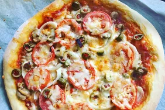

Home
Pizza

Description
To make a homemade pizza, begin by preparing the dough. Mix flour, yeast, salt, sugar, and warm water, then knead the mixture into a smooth dough. Let the dough rise for about an hour. Once risen, roll it out into your desired pizza shape. Preheat your oven to 220°C (425°F). Spread a layer of tomato sauce over the dough, followed by shredded mozzarella cheese.
Add your favorite toppings such as pepperoni, vegetables, mushrooms, or olives. Bake the pizza in the oven for 12-15 minutes, or until the crust is golden and the cheese is melted and bubbly. Remove from the oven, slice, and enjoy your freshly made pizza!
Ingredients
- Pizza dough
- Tomato Sauce
- Mozzarella cheese
- Olive oil
- Salt and Pepper
- Pepperoni
- Italian Seasoning
Steps
- If making from scratch, mix flour, yeast, sugar, salt, and warm water. Knead the dough and let it rise for about an hour.
- Set your oven to 220°C (425°F).
- Set your oven to 220°C (425°F).
- Spread a layer of tomato sauce evenly on the rolled-out dough. Sprinkle mozzarella cheese on top.
- Add your preferred toppings, such as pepperoni, vegetables, mushrooms, or olives.
- Place the pizza in the preheated oven and bake for 12-15 minutes, or until the crust is golden and the cheese is melted.
- Remove the pizza from the oven, slice it, and enjoy!